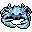
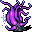

The Abyss
英語版 CrawlWiki の記事「The Abyss」(0.34 向け、2026-09-19 版)の翻訳です。原文の著者は編集履歴をご覧ください。
| アビスはまったく奇怪な場所で、絶えず形を変え、ねじれている。あらゆる種類のモンスターで満ちており、その大半は悪魔の類で、侵入者を貪り食うという共通の目的を持っている。またアビスは多くの魔術師にとってのゴミ捨て場でもあり、彼らはあなたのような勇者気取りをこの狂気の試練の場に送り込むことを楽しんでいる。ルゴヌがこの場所とその住人たちを巡って何かを企んでいるらしいことから、この混沌にもなんらかの秩序があるという話だ。
深層にはアビスへの門がたくさんある。 アビスは無限に広がる 7 つの階層からなる。深淵のルーンは 3 階層目以降で見つかり、深い階層ほど見つかりやすい。迷宮へ戻る門はアビスのあちこちにあり、深い階層にいるときや深淵のルーンを持っているときほど見つかりやすい。 アビスに長く留まる冒険者は、抗いようもなくより深くへと引き込まれていく。モンスターを倒すとアビスの物質が歪み、やがて出口となる門が現れる。さらに粘るとアビスに穴が開き、より深い階層へ降りられるようになる。アビスは訪れた者を覚えている。一度ある階層まで入り込んだ冒険者は、次にアビスを訪れたときも、少なくともその深さまでは連れて行かれる。 |
| 悪魔の跋扈する領域へと続く一方通行の門。その先は混沌に引き裂かれ、物質そのものが移ろいやすく気まぐれで、悪夢から抜け出たような怪物で満ちている。 |
 アビスは定まった形を持たない異次元の混沌の世界で、邪悪な怪物たちが棲み、無形のルゴヌが支配している。わざと来たにせよ、ただ運が悪くて落ちてきたにせよ、ここで生き延びて粘り強く探索を続ければ、いずれは深淵のルーンが、運がよければ出口まで見つかるだろう。
アビスは定まった形を持たない異次元の混沌の世界で、邪悪な怪物たちが棲み、無形のルゴヌが支配している。わざと来たにせよ、ただ運が悪くて落ちてきたにせよ、ここで生き延びて粘り強く探索を続ければ、いずれは深淵のルーンが、運がよければ出口まで見つかるだろう。
基本情報
アビスは 7 階層からなる変わった分岐で、それぞれの「階層」は地形が絶えず入れ替わる果てしない平面になっている。アビスには常に次のような特徴があり、階層の中を移動するのも、階層から階層へ移るのもひと苦労だ。
- アビスの地図は作れない。地形は視界の外で絶えず変わり、視界から外れたものはすぐに忘れてしまう。
- テレポートの巻物によるテレポートは、発動までさらに
5+1d9ターン余計にかかる[1]。 - プレイヤーはランダムな間隔でテレポートさせられる。そのうち 20% は、マップ全体が作り直される。
- テレポートの際、
(XL - Depth)^2 / 2187 * 100% の確率で、アビスのより深い階層へ無理やり送られることがある。[2]
- テレポートの際、
- 普通の階段の代わりに、深層への門(abyssal stairs)と分岐からの出口が、ランダムに、あるいは十分な経験値を稼いだあとに現れる。上の階層へ戻ることは決してできず、行けるのは下か外だけだ。アビスに入り直しても、最後にいた階層に出る。
- アビスでは、ときどき整った構造物を見かけることがある。こうした作り込まれたヴォールトには、強力なモンスター、深層への門、深淵のルーン、さらには出口まであることが多い。たいていは守りが固いので、近づくときは用心すること。
- ルーンとヴォールトの中のものを除けば、アイテムがランダムに生成されることはない。
モンスターの生成
アビスにいる間は、どの階層であっても 5 ターンごとにモンスターが生成される。[3] アビス第1階層から第5階層までは、Floor/5 の確率でもう 1 体生成される。[4] アビス第6階層では 5 ターンごとに必ず 2 体、第7階層では 3 体が生成される。
アビス第6・第7階層では、モンスター 1 体ごとに (Floor-5)/10 の確率で、わざわざあなたの近くに生成される。そうでなければ生成される場所はランダムで、近いこともあれば遠いこともある。
ゾットのオーブを持っている間は、アビスでの通常の生成は止まる。ケイブリアドスの信者なら、生成のたびに 50% の確率で失敗する。
アビスに入るには
アビスに入る方法はいくつかある。自分の意思で入れるものもあるが、ほとんどはそうではない。
- パンデモニウムか深層にあるポータルに入る。
- 深層第3階層には必ずアビスへの入り口がある。深層のほかの階層では、33% の確率でポータルがある。[5]
- モンスターの呪文で追放される。
- 歪曲の武器を手放す(25% の確率)。
- 歪曲の武器で攻撃される(5% の確率)。
- ルゴヌの能力「アビスへの退避」を使う(信仰心 5* で使えるようになり、コストは大きい)
- ルゴヌの怒りを買う。
アビスに入る深さは経験レベルにそのまま比例する。XL が高いほど深い階層に入る確率が上がり、最も深くてアビス第5階層まで入り込む。ポータルから入るときは、入りうる一番深い階層を前もって知らせてくれる。
アビスにいる間に追放されると、1 階層下へ落とされる。
探索
目標は脱出か、ルーンの入手のどちらかだ。あまりうろつき回らないほうがいい。レベルの高い(XL20 前後の)キャラクターならアビス第3階層はわりと楽に生き延びられるが、アビスの深部(第6〜7階層)は 15 ルーンのキャラクターにとっても脅威になる。それに、探索すればするほど住人たちに悪性変異をかけられる危険も増える。
ルーン
深淵のルーンはアビス第3階層以降で生成されることがあり、必ずヴォールトの中にある。深い階層ほど(第5階層までは)生成されやすくなるが、モンスターの生成率が大きく上がるので、わざわざ深くまで行く理由はあまりない。深く潜るほど、外への出口と深層への門も出やすくなる。信仰心 5* か 6* のルゴヌの信者は、ルーンの生成については通常より 1 階層深くにいるものとして扱われる。
ルーンが生成されていれば、その場所がミニマップに表示される。ルーンのある場所に近づくと、メッセージログにそのことが記される。


 ルーンの灯のタイルは、近くにルーンがあるしるしだ。
ルーンの灯のタイルは、近くにルーンがあるしるしだ。
出口
深く潜るほど出口が出る確率は上がり、深淵のルーンを持っていると出口ははるかに早く現れる。
- 第1階層 = 新たに見えたタイル 7250 枚につき 1
- 第2階層 = 6000 枚につき 1
- 第3階層 = 4750 枚につき 1
- 第4階層 = 3500 枚につき 1
- 第5〜7階層 = 2250 枚につき 1
- 深淵のルーンを持っているとき = 1000 枚につき 1
モンスターを倒し続けて、いずれ出口の門を出現させることもできる。得られる経験値が多いほど早く出る。ただし第5階層より深いところでは、階段の生成に関して経験値が (Floor-4) 分の 1 に減らされて扱われる。
最後の手段として、アビスのあちこちにはルゴヌの祭壇があり、改宗すればすぐに外へ出してもらえる。たいていの神は見捨てられると神罰を下してくるが、ルゴヌは怒りからある程度守ってくれるので、生き延びるには最善の、あるいは唯一の手になることもある。
モンスター
- アンデッドと、魔神以外のほぼすべての悪魔。終盤のモンスターから作られた派生アンデッドも含む。
- ほぼすべての眼球とドラコニアン。
- あなたがアビスへ追放したユニーク。
- 魔術師やリッチといった、人型の呪文使い。
- ジクジルはプレイヤーに永続的な変異を与えられる唯一のモンスターだ。ほかのモンスターが与える変異は一時的なものにとどまる。
- アビスにしかいないモンスターもいくつかいる。
| t  黙示録の蟹 |
X |
X |
X |
z |
| x |
* |
v |
* |
P  星の花 |


深く潜るほど、手ごわいモンスターが出るようになる。1級悪魔はめったに見ない存在からかなりよく見る存在に変わり、天使や涜神の従者も出はじめる……。
小技
- ここの敵は地獄の敵とくらべてもそれほど弱くないので、耐性は一通りそろえておきたい。囲まれると命取りになるが、十分長く逃げ続けられれば階層が作り直され、追っ手を振り切れる。隠密が高ければ、関わりたくない戦いから歩いて離れられるので役に立つ。ここではゆっくり休む暇がほとんどないので、再生も役に立つ。
- 序盤にアビスへ送られる(たいていはアビスへの追放の呪文による)のは死刑宣告に等しいことが多いが、出口の門を見つけるまで生き延びられることもある。アビスを生き抜くうえで、ほぼどんなプレイヤーにとっても一番大事なのは機動力だ。使える速度上の利点はすべて使い、避けられる戦闘はすべて避けよう。弱めの敵なら倒せるとしても、できるだけ多くのターンを未踏のタイルの探索に使い、脱出の機会を増やしたい。モンスターを見かけたら、反対方向へ向かうこと。ルゴヌに改宗すれば手っ取り早く脱出できる(ただし元の神の怒りを買う)。
- 未探索の方向へ斜めに進むと、明らかになるタイルが増え、出口が見つかりやすくなる。そのぶんモンスターにも出くわしやすくなるが。
- アビスを生き延びる一番賢いやり方は、自分の都合のいいときにだけ入ることだ。Crawl屈指の凶悪な呪文を避けるコツは、アビスへの追放のページを読むこと。
- テレポートの巻物を使うと一帯が作り直され、近くにルーンのヴォールトが生成される機会がもう一度得られる。アビスでは発動が余計に遅れるので、テレポートは普段よりずっと早めに使い、危険が実際に問題になる前に使っておこう。どこに飛ばされても、立て直す余裕はあまりない。
- 隠密が 10 前後あり、回復手段か消費 MP の少ない呪文があるなら、XL 19 前後で入るのがアビス第3階層からルーンをかすめ取るのにちょうどいい。それよりずっと待つようなら、ゲームのほかの部分で経験値を稼ぎ、ゾットに行く直前に 3 つ目のルーンを取りに戻ったほうがいいかもしれない。入れるのは最も深くてアビス第5階層までだ。
変更履歴
- 0.35 では、アビスの入り口は深層第3階層ではなく迷宮の終盤で見つかるようになる。テレポートの巻物を使うとルーンの生成率が下がる。ルーンが生成されるにはアビスで一定のターン数を過ごす必要があり、0.34 のように入った直後にルーンが生成されることはなくなる。
- 0.34 で、アビスに入る深さがプレイヤーのレベルに結びつけられ、XL が高いほど深い階層(第5階層まで)に入るようになった。永続的な変異の原因はほとんど取り除かれた。
- 0.29 で、0.28 の稼ぎ対策の大半が元に戻された。
- アビスで再び経験値と信仰心が得られるようになった(アイテムは出ない)。ルーンで経験値は得られなくなり、哀れなる星の弱体化は撤回された。
- 常に(少なくとも)それまでに訪れた一番深い階層へ行くようになった。分岐の深さは 7 階層になり、新しい階層ほど難しくなる。
- プレイヤーはマップ上でルーンの場所を感知できるようになった。ルーンが移動したり消えたりしたときも感知できる。さらに、ルーンの場所に近づくと「ルーンの灯」で知らせてくれるようになった。
- 0.28 で、稼ぎ対策が導入された。
- 0.25 より前は、アビスの出口を出現させたあと、出ることも降りることもしないでいると、経験値を稼いだときに出るのは必ず深層への門だった。
- 0.23 より前は、ラビリンスでアビスへのポータルが見つかることがあった。
- 0.22 より前は、テレポートしたときにアビスのより深くへ引きずり込まれることはなかった。
- 0.18 より前は、アビスでモンスターを倒しても出口や下り階段が出現することはなかった。
- 0.15 より前は、アビスでは瞬間移動がよく打ち消された。
- 0.12 より前は、アビスは 1 階層しかなく、ルーンを見つけるには十分長くさまよえばよかった。溶岩や深い水脈の地形も生成された。
- 0.10 より前は、アビスの地形の入れ替わりはずっとゆっくりで、しかもあなたが直接見ていないところでしか起こらなかった。
- さらに古いバージョンでは、一方向に進みすぎるとアビスは反対側につながっていた。また、地獄の神秘の力の効果のひとつに、アビスへの追放があった。
出典
- ↑ spl-transloc.cc:901 (0.32.1)
- ↑ abyss.cc:1717 (0.32.1)
- ↑ mon-place.cc:262 (0.32.1)
- ↑ timed-effects.cc:296 (0.32.1)
- ↑ dat/des/branches/abyss.des:26 (0.32.1)
| 分岐の一覧 |
|---|
| |
| 関連項目: ポータル |